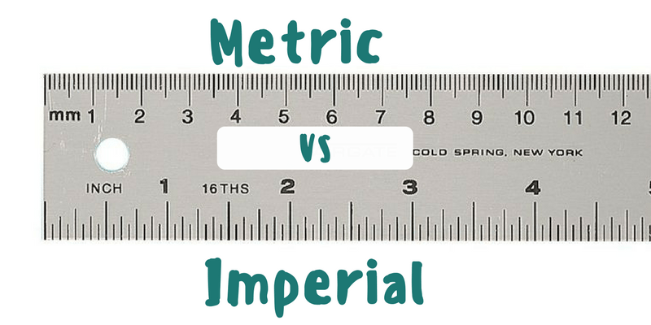

<!--The content below is only a placeholder and can be replaced.-->
<div style="text-align:center">
  <h1>
    Metric to Imperial, Imperial to Metric App!
  </h1>
  
</div>
<h2>Convert from SI unit to metres: </h2>
<form action="/action_page.php">
  SI unit:<br>
  Unit: <input type="text" placeholder="in, ft, mi, mm, cm, m or km" value=""> SI unit value: <input type="number" name="value" value="">
  <br>
  <button type="button">Convert</button>
</form>

<h2> Convert metres to your SI unit: </h2>
<form action="/action_page.php">
  Metres (m):<br>
  Metres: <input type="number" name="value" value=""> Unit converted to: <input type="text" name="unit" placeholder="in, ft, mi, mm, cm, m or km" value=""> 
  <br> 
  <button type="button">Convert</button>

</form>

